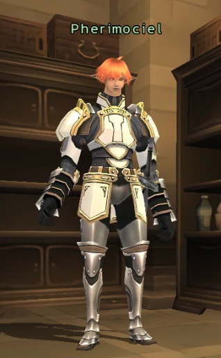
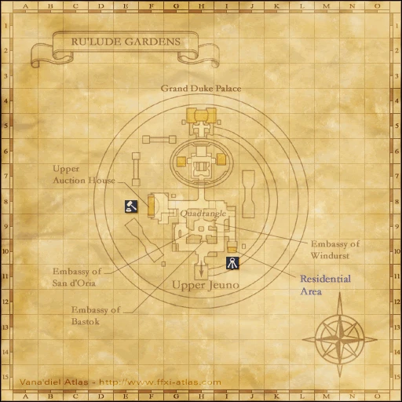

Before you begin
- Complete CoP 5-3: Three Paths.
Starting point
Pherimociel · Ru'Lude Gardens · G-6
People in this mission


Walkthrough
- Speak to Pherimociel inside the palace guard room in Ru'Lude Gardens (G-6).
- Check the Marble Bridge Eatery door in Upper Jeuno (F-7).
- Zone back into Ru'Lude Gardens and watch the arrival scene.
Completion and reward
Progress to the next Chains of Promathia mission.
Area maps
Open a zone below, then select a map to enlarge it. Match the named floors and grid coordinates in the steps; these are reference area maps, not a live position tracker.
Ru'Lude Gardens



Upper Jeuno


Zone guides
References
Steps are an original summary of the linked walkthrough and reviewed source. Other servers’ bonus rewards are not included. How to read requirements, waits and battlefield notes.
Additional level-75 reference
|
Walkthrough
- Head to Ru'Lude Gardens and talk to Pherimociel (G-6) inside the Guard Post of the Grand Duke Palace for a cutscene.
- Head to Upper Jeuno and click on the door to the Marble Bridge at F-7 for a cutscene.
- Zone into Ru'Lude Gardens for a cutscene.
Game Description
- Mission Orders
- Prishe has been spotted in Jeuno! Journey to the Grand Duke Palace to learn more of her whereabouts--before Ulmia is overcome by worry for her long-time friend.
Adapted from Eden Wiki: For Whom the Verse is Sung · Contributors and history · CC BY-SA 4.0. Revision 22378. Layout, links and optional background text adapted for Zenith.